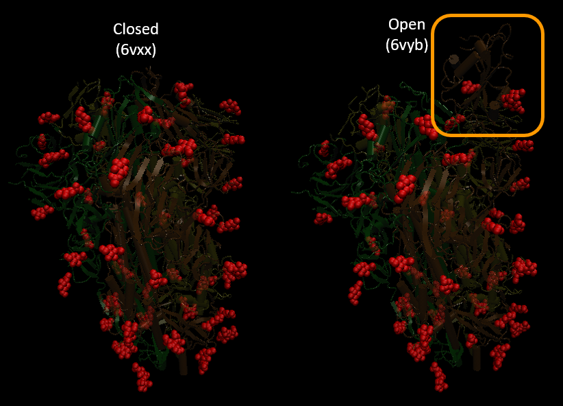

Glycans
The surface of viruses and host cells are not smooth, but rather “fuzzy”. This is because the surface is decorated by structures called glycans, which consists of numerous monosaccharides linked together by glycosidic bonds. Although this definition is also shared with polysaccharides, glycans typically refer to the carbohydrate portion of glycoproteins, glycolipids, or proteoglycans 1. Glycans have been found to have structural and modulatory properties and are crucial in recognition events, most commonly by glycan-binding proteins (GBPs) 2. In viral pathogenesis, glycans on host cells act as primary receptors, co-receptors, or attachment factors that are recognized by viral glycoproteins for viral attachment and entry. On the other hand, glycans on viral surfaces are key for viral recognition by the host immune system 3. Unfortunately, some viruses have evolved methods that allow them to effectively conceal themselves from the immune system. One such method, which is utilized by SARS-CoV-2, is a “glycan shield”, where glycosylation of surface antigens allows the virus to hide from antibody detection. Another notorious virus that utilizes glycan shielding is HIV. The Spike protein of SARS-CoV-2 was also found to be heavily glycosylated, shielding around 40% of the Spike protein from antibody recognition 4. Such glycosylation does not hinder the Spike protein’s ability to interact with human ACE2 because the Spike protein is able to adopt an open conformation, allowing a large portion of the RBD being exposed.
Glycans are generally very flexible and have large internal motions that makes it difficult to get an accurate description of their 3D shapes. Fortunately, molecular dynamics (MD) simulations can be employed to predict the motions and shapes of the glycans. With a combination of MD and visualization tools (i.e. VMD), snapshots of the Spike protein with its glycosylation can be created.

Nonetheless, basic visualizations of the Spike protein with its glycans can be made using just VMD. Here, we used SARS-CoV-2 Spike in its closed conformation (6vxx)) and SARS-CoV-2 Spike in its open conformation (6vyb) to create the following images. Notice how the RBD in the orange chain is much more exposed in the open conformation. The presumed glycans are shown in red.

To see how to visualize glycans in VMD, go to the following tutorial.
Glycans
The surface of viruses and host cells are not smooth, but rather “fuzzy”. This is because the surface is decorated by structures called glycans, which consists of numerous monosaccharides linked together by glycosidic bonds. Although this definition is also shared with polysaccharides, glycans typically refer to the carbohydrate portion of glycoproteins, glycolipids, or proteoglycans [^Dwek]. Glycans have been found to have structural and modulatory properties and are crucial in recognition events, most commonly by glycan-binding proteins (GBPs) [^Varki]. In viral pathogenesis, glycans on host cells act as primary receptors, co-receptors, or attachment factors that are recognized by viral glycoproteins for viral attachment and entry. On the other hand, the immune system can recognize foreign glycans on viral surfaces and target the virus [^Raman]. Unfortunately, some viruses have evolved methods that allow them to effectively conceal themselves from the immune system. One such method is a glycan shield. By covering the viral surface and proteins with glycans, the virus can physically shield itself from antibody detection. Because the virus replicates by hijacking the host cells, the glycan shield can consist of host glycans and mimic the surface of a host cell. A notorious virus that utilizes glycan shielding is HIV. In the case of SARS-CoV-2, the immune system recognizes the virus through specific areas, or antigens, along the S protein. The S protein, however, is a glycoprotein, meaning that it is covered with glycans which can shield the S protein antigens from being recognized.
In our last tutorial, we will use VMD to try to visualize the glycans of SARS-CoV-2 S protein.
From the visualization we created in the tutorial, we can see that glycans are present all around the S protein. In fact, the glycans cover around 40% of the Spike protein[^Grant]! This raises an important question: If the glycans on the S protein can hide from antibodies, won’t it get in the way of binding with ACE2? Such glycosylation does not hinder the Spike protein’s ability to interact with human ACE2 because the Spike protein is able to adopt an open conformation, allowing a large portion of the RBD being exposed. In the figure below, we compared the SARS-CoV-2 Spike in its closed conformation (PDB entry: 6vxx)) and SARS-CoV-2 Spike in its open conformation (PDB entry: 6vyb). The presumed glycans are shown in red. Notice how the RBD in the orange chain is much more exposed in the open conformation.
 This figure shows the SARS-CoV-2 S protein in the closed conformation (left) and the protein with an open conformation of one chain (right) using the PDB entries 6vxx and 6vyb, respectively. The protein chains are shown in dark orange, yellow, and green. The presumed glycans are shown in red. Notice how in the open conformation, the RBD of one of the chain is pointed upwards, exposing it for ACE2 interactions.
Glycans are generally very flexible and have large internal motions that makes it difficult to get an accurate description of their 3D shapes. Fortunately, molecular dynamics (MD) simulations can be employed to predict the motions and shapes of the glycans. With a combination of MD and visualization tools (i.e. VMD), very nice looking snapshots of the glycans on the S protein can be created.
 Snapshots from molecular dynamics simulations of the SARS-CoV-2 S protein with different glycans shown in green, yellow, orange, and pink. Source: https://doi.org/10.1101/2020.04.07.030445 [^Grant]
Snapshots from molecular dynamics simulations of the SARS-CoV-2 S protein with different glycans shown in green, yellow, orange, and pink. Source: https://doi.org/10.1101/2020.04.07.030445 [^Grant]
SARS-CoV-2 Vaccine
Much of vaccine development for SARS-CoV-2 has been focused on the S protein given how it facillitates the viral entry into host cells. In vaccine development, it is critical to understand every strategy that the virus employs to evade immune response. As we have discussed, SARS-CoV-2 hides its S protein from antibody recognition through glycosylation, creating a glycan shield around the protein. In fact, the “stalk” of the S protein has been found to be completely shielded from antibodies and other large molecules. In contrast, the “head” of the S protein is vulnerable because of the RBD is less glycosylated and becomes fully exposed in the open conformation. Thus, there is an opportunity to design small molecules that target the head of the protein [^Casalino]. Glycan profiling of SARS-CoV-2 is extremely important in guiding vaccine development as well as improving COVID-19 antigen testing [^Watanabe].
Sources
-
Dwek, R.A. Glycobiology: Toward Understanding the Function of Sugars. Chem. Rev. 96(2), 683-720 (1996). https://pubs.acs.org/doi/10.1021/cr940283b ↩
-
Varki A, Lowe JB. Biological Roles of Glycans. In: Varki A, Cummings RD, Esko JD, et al., editors. Essentials of Glycobiology. 2nd edition. Cold Spring Harbor (NY): Cold Spring Harbor Laboratory Press; 2009. Chapter 6. https://www.ncbi.nlm.nih.gov/books/NBK1897/ ↩
-
Raman, R., Tharakaraman, K., Sasisekharan, V., & Sasisekharan, R. Glycan-protein interactions in viral pathogenesis. Current opinion in structural biology, 40, 153–162 (2016). https://www.ncbi.nlm.nih.gov/pmc/articles/PMC5526076/ ↩
-
Grant, O. C., Montgomery, D., Ito, K., & Woods, R. J. Analysis of the SARS-CoV-2 spike protein glycan shield: implications for immune recognition. bioRxiv : the preprint server for biology, 2020.04.07.030445. https://www.ncbi.nlm.nih.gov/pmc/articles/PMC7217288/ ↩